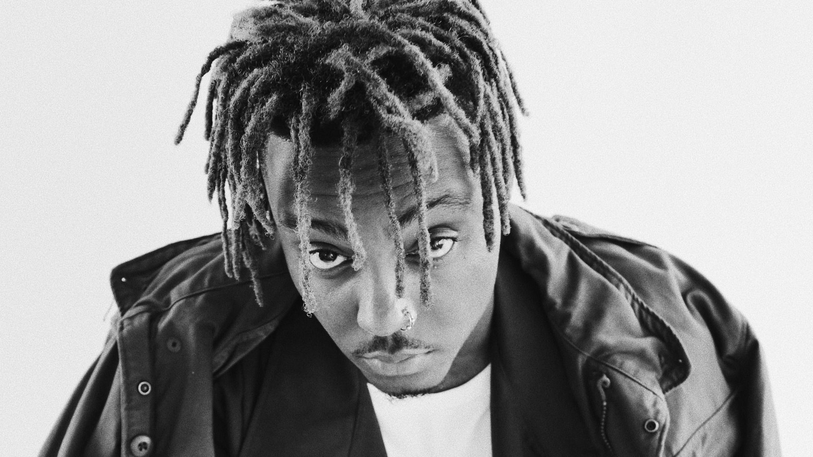

<!DOCTYPE html>
<html lang="en">
<head>
    <meta charset="UTF-8">
    <meta name="viewport" content="width=device-width, initial-scale=1.0">
    <title>Tribute Page</title>
    <link rel="stylesheet" href="styles.css">
</head>
<body>
    
</body>
</html>

<main id="main">
    <h1 id="title">Juice Wrld</h1>
    <p>The man who changed the world of Hip-Hop</p>
    <figure id="img-div">
      
      <figcaption id="img-caption">
        Portrait of the late Juice Wrld for his single "Lean Wit Me"
      </figcaption>
    </figure>
    <section id="tribute-info">
      <h3 id="headline">A timeline of Jarad Anthony Higgins life:</h3>
      <ul>
        <li><strong>1998: Early Life</strong> - Born in Chicago, Illinois.  Moved to Homewood,Illinois where he later graduated from 
            Homewood-Flossmoor High School.</li>
        
        <li>
          <strong>2018: Goodbye & Good Riddance and WRLD Domination Tour</strong> - On May 4, 2018, "Lucid Dreams" was officially released as a single and accompanied by
           a Cole Bennett-directed music video, similarly to "All Girls Are the Same". It peaked at number two on the Hot 100
            and quickly became one of the most streamed songs of 2018; it remains his most-streamed song,
            reaching over one billion streams on Spotify by January 2020. "Lucid Dreams" was followed by "Lean Wit Me"
             on May 22, which peaked at number 68 on the Hot 100; Higgins' debut full-length album, Goodbye & Good Riddance,
              which included his three previous singles, released the following day. This album gained him much recognition
               and praise, along with cementing him as a rising star in the US. On June 19, he released a two-song EP
                titled Too Soon.. in remembrance of, and dedicated to, deceased rappers Lil Peep and XXXTentacion. Lil Peep 
                died of an overdose in 2017 and XXXTentacion was murdered on June 18, 2018, one day before the project was 
                released. Higgins said that he and XXXTentacion were friends and that they would have FaceTime calls 
                together, revealing that their last conversation was about meeting up. The cover of the Too Soon.. EP is 
                a screenshot of a conversation between Higgins and XXXTentacion. The song "Legends" from the EP debuted
                 at number 65 on the Hot 100 and peaked at number 29 over a year later following Higgins' death.


        </li>
        <li>
          <strong>2019: Wrld on Drugs and Death Race for Love</strong> - In 2019 Higgins father passed away. Higgins' mother was very religious and conservative, 
          and did not let him listen to hip hop. He was allowed to listen to rock and pop music, 
          however, being introduced to artists including Billy Idol, Blink-182, Black Sabbath, Fall Out Boy, 
          Megadeth and Panic! at the Disco through video games such as Tony Hawk's Pro Skater and Guitar Hero.
        </li>
        <li>
          <strong>2020: Legends Never Die and various singles</strong> - Higgins' first posthumous appearance was on Eminem's eleventh studio album Music
           to Be Murdered By on the track "Godzilla", released on January 17, 2020. "Godzilla" peaked at number
            three on the Hot 100 and number one on the UK Singles Chart. On January 22, an announcement was
             posted on Higgins' Instagram account by members of his family and the team at Grade A Productions that
              thanked fans for their adoration for Higgins and confirmed their intention to release music that he was
               working on at the time of his death
        <li>
          <strong>2021: Fighting Demons and Into the Abyss</strong> - 
          On January 15, 2021, Higgins' estate released "Bad Boy" featuring Young Thug, which was accompanied
           by a Cole Bennett-directed music video shot entirely before Higgins' death; this marks the final collaboration
            between the artist and director before the former's death. On March 5, "Life's a Mess II", an alternative
             version of the track "Life's a Mess" from Legends Never Die, featuring Clever and Post Malone was released.[95]
              On May 28, Higgins' debut full-length album Goodbye & Good Riddance was re-released to commemorate its third
               anniversary; the re-release includes two new songs, one titled "734" and the other being a remix of
                "Lucid Dreams" featuring Lil Uzi Vert. The 2018 single "Armed and Dangerous", which was included on
                 the December 2018 Spotify and Tidal reissue of the album, is excluded from the revised tracklist.
        </li>
        <li>
          <strong>2022 - present: Fighting Demons deluxe and The Party Never Ends</strong> 
          In early 2022, an extended version of "Go Hard," titled "Go Hard 2.0," was added to the
           tracklist of Fighting Demons, in addition to two previously unreleased songs, "Cigarettes"
            and "Sometimes"; "Cigarettes" debuted at number 43 on the Billboard Hot 100, while "Sometimes" 
            debuted at number 57. On August 26, Higgins was featured on the track "Juice Wrld Did" from DJ Khaled's
             album God Did. In an interview with Jay-Z, Khaled revealed that he chose to add the song to his album
              as a tribute to Higgins after Lil Bibby reached out to him and advocated for its inclusion. On October
               14, "Bye Bye," a collaborative single with Marshmello, was released alongside a music video. On October
                28, Higgins' estate released the song "In My Head;" prior to its release, a 30-second snippet of the track
                 was uploaded to his official Spotify page under the title "Rush Hour." The song was accompanied by a Steve
                  Cannon and Chris Long-directed music video that depicts Higgins recording music and touring at various
                   points throughout his career through the use of archival footage.
        </li>
       
      </ul>
      <blockquote
        cite="http://news.rediff.com/report/2009/sep/14/pm-pays-tribute-to-father-of-green-revolution-borlaug.htm"
      >
        <p>
          "You can do whatever you put your mind to... Everybody breaths like you, everybody bleeds like you."
        </p>
        <cite>-- Juice Wrld</cite>
      </blockquote>
      <h3>
        If you have time, you should read more about this incredible human being
        on his
        <a
          id="tribute-link"
          href="https://en.wikipedia.org/wiki/Juice_Wrld"
          target="_blank"
          >Wikipedia entry</a
        >.
      </h3>
    </section>
  </main>
  